Making Method Figures
The method figure is a separate figure from the hero figure. The hero figure answers why should I care? The method figure answers how does it work?
| Hero figure | Method figure | |
|---|---|---|
| Answers | Why should I care? | How does it work? |
| Sits | On page 1 | Where the method section starts |
| Shows | Problem, idea, payoff | Steps, parts, and what is new |
| Detail | None | Enough to explain the idea back, not to rewrite the code |
A method figure can answer six different questions. Pick the one where your novelty lives. This page shows 28 method figures from NeurIPS, ICML, ICLR, CVPR, ICCV, ECCV, KDD, AAAI, NAACL, MICCAI, JMLR and Nature, grouped by that question. They cover vision, language models, graphs, time series, weather, remote sensing and classic machine learning.
Choose the question
| Your novelty is | The figure answers | Draw | See |
|---|---|---|---|
| A new sequence of steps | What happens to one input? | One example, shown at every step | NeRF, YOLO, GraphSAGE, GenCast, RAG |
| A new model | What is it made of? | The parts, with the new ones marked | Transformer, U-Net, Vision Transformer, Segment Anything, Diffusion Transformer, Flamingo |
| One piece in a known model | What is the new piece? | Only that piece, before and after | ResNet, ControlNet, LoRA, Dropout |
| A choice among known designs | How does it differ? | The alternatives side by side, yours last | EfficientNet, Feature Pyramid Networks, ConvNeXt, Time-LLM, Tree of Thoughts |
| A new way to train | How does it learn? | What the objective compares | CycleGAN, SimCLR, BERT, SatCLIP |
| An idea that needs intuition | Why should it work? | A toy case in two dimensions | LIME, node2vec, MAML, Score-based SDEs |
Our default for an applied paper: one real example followed through every step, with the new step in colour and everything standard in grey. If the novelty is one block, add a second, small figure of only that block.
What happens to one input?
Your novelty is a new sequence of steps. Follow one example through all of them.
NeRF · ECCV 2020 · paper
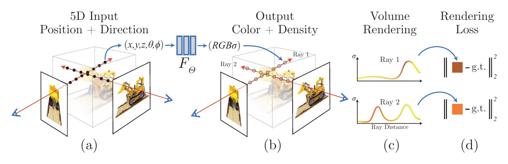
Its caption opens: “An overview of our neural radiance field scene representation and differentiable rendering procedure.”
One scene runs through four lettered panels, and the caption walks from (a) to (d) in the same order.
Borrow: Letter the stages, and reuse the letters in the caption and the text.
YOLO · CVPR 2016 · paper
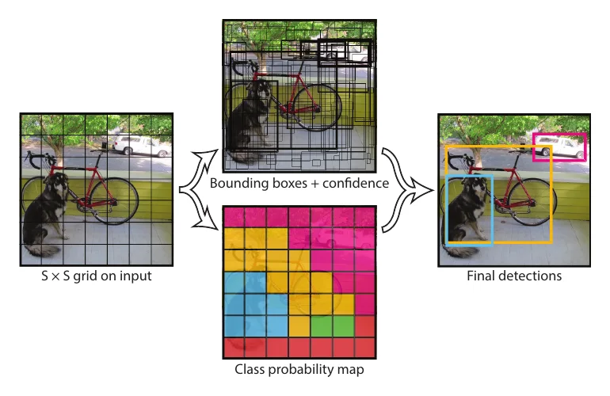
Its caption opens: “The Model.”
One photo becomes a grid, then boxes and a class map in parallel, then the final detections. Every stage is a picture of the data.
Borrow: Show the data at each stage, not the name of the stage.
GraphSAGE · NeurIPS 2017 · paper
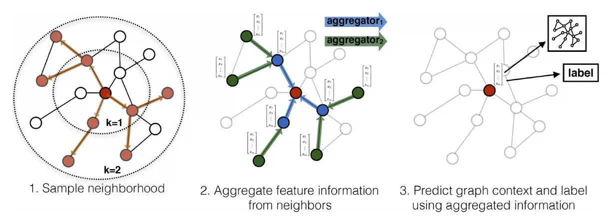
Its caption opens: “Visual illustration of the GraphSAGE sample and aggregate approach.”
Three numbered steps on the same small graph. Colour shows which nodes each step touches.
Borrow: Use one toy example, redrawn at every step.
GenCast · Nature 2024 · paper
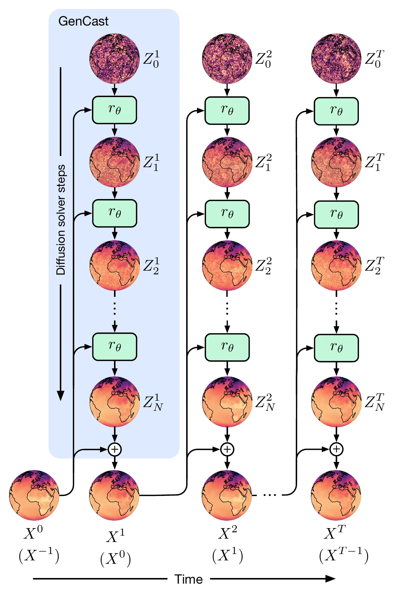
Its caption opens: “Schematic of how GenCast produces a forecast.”
Real weather states sit at every node. Noise is refined into a forecast, and that forecast feeds the next step. A blue box isolates one step.
Borrow: Shade one pass of a loop, then show it repeating.
RAG · NeurIPS 2020 · paper
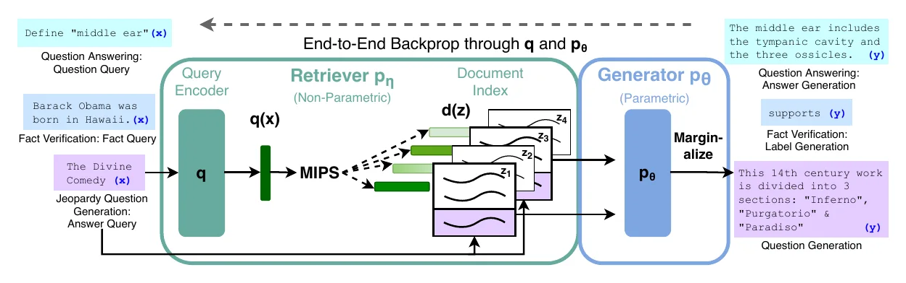
Its caption opens: “Overview of our approach.”
Three real questions go in on the left and their answers come out on the right. Two rounded boxes group the retriever and the generator, and a dashed arrow on top shows what is trained end to end.
Borrow: Group the boxes into the two or three parts that your text names. Watch out: It is dense at print size.
What is it made of?
Your novelty is a new model. Draw its parts, and mark the new ones.
Transformer · NeurIPS 2017 · paper
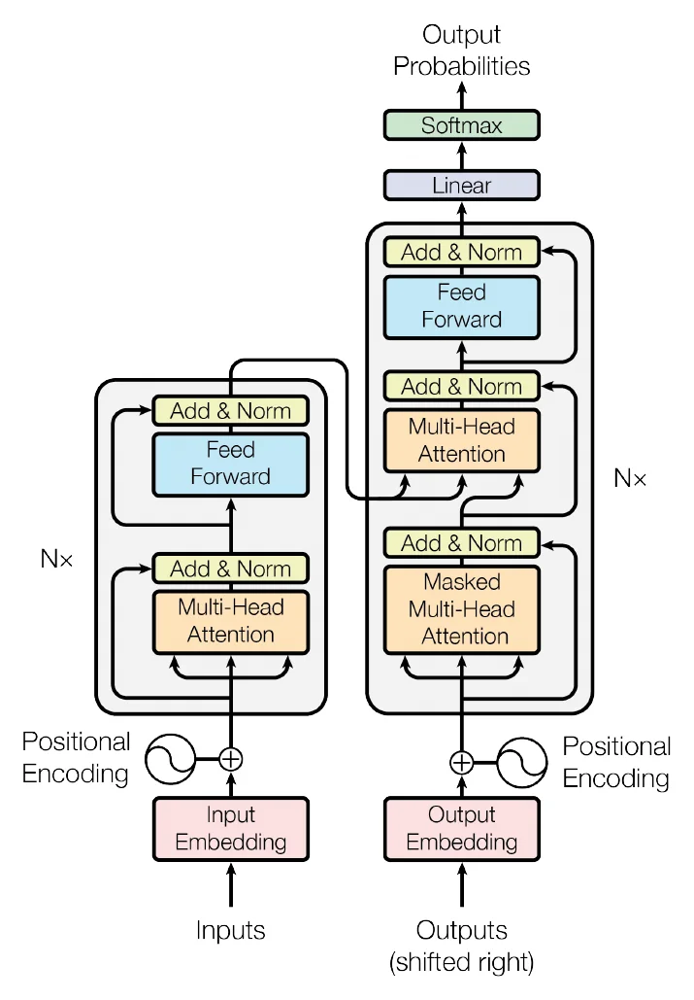
Its caption opens: “The Transformer - model architecture.”
Colour means block type, and the same colour is the same block everywhere. “N×” replaces a stack of copies.
Borrow: Use one colour per kind of block, and a repeat mark in place of repeats.
U-Net · MICCAI 2015 · paper
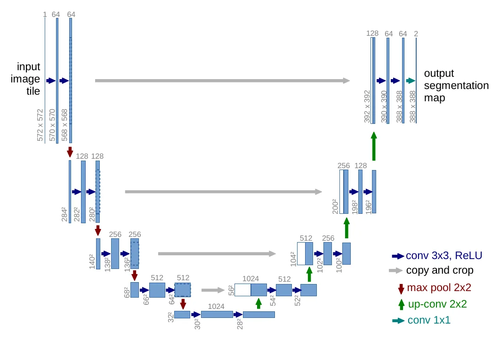
Its caption opens: “U-net architecture (example for 32x32 pixels in the lowest resolution).”
The layout is the idea: down one side, up the other, with skip arrows across. A legend gives each arrow colour one meaning.
Borrow: Give each arrow style one meaning, and say it in a legend. Watch out: The size labels are tiny.
Vision Transformer · ICLR 2021 · paper
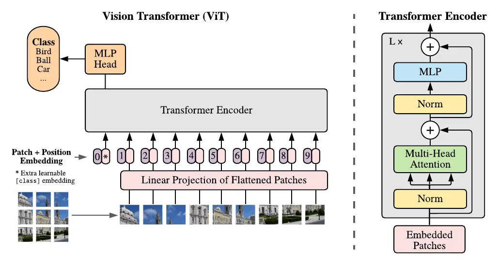
Its caption opens: “Model overview.”
The overview is on the left, with real image patches going in. The one block that needs detail is enlarged on the right.
Borrow: Give the overview first, then zoom into one block.
Segment Anything · ICCV 2023 · paper
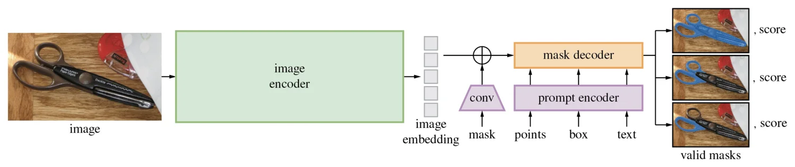
Its caption opens: “Segment Anything Model (SAM) overview.”
A real image goes in and real masks come out. The heavy encoder is drawn large and the light decoder small, which is the point of the design.
Borrow: Let the size of a box show its cost.
Diffusion Transformer · ICCV 2023 · paper
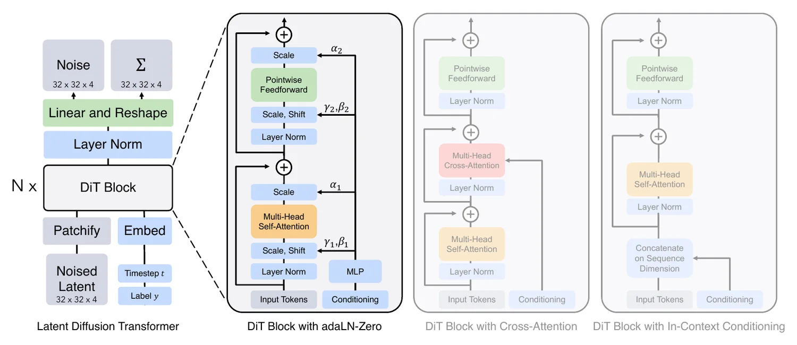
Its caption opens: “The Diffusion Transformer (DiT) architecture.”
The chosen block is in full colour. The two variants that were tried are faded beside it.
Borrow: Fade the alternatives you tried, and keep yours in colour.
Flamingo · NeurIPS 2022 · paper
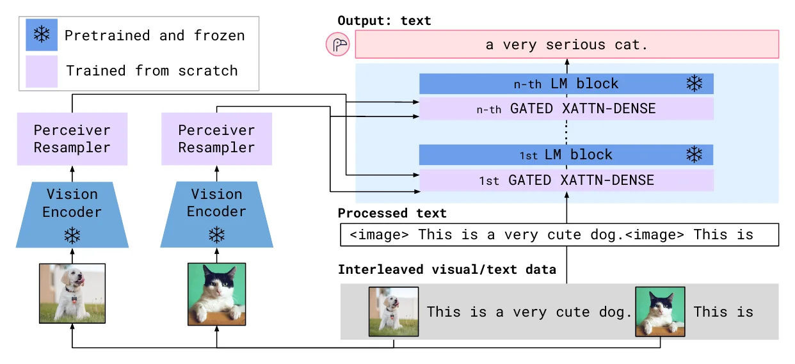
Its caption opens: “Flamingo architecture overview.”
A two-colour key separates what is frozen from what is trained, and a real example of photos and text runs through the model.
Borrow: Mark the trained and the frozen parts, with a key.
What is the new piece?
Your novelty is one piece inside a known model. Draw only that piece.
ResNet · CVPR 2016 · paper
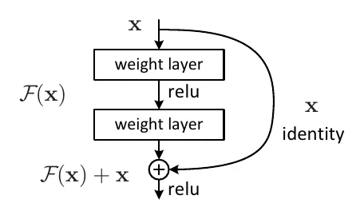
Its caption opens: “Residual learning: a building block.”
Two layers, one curved arrow, and symbols that match the equations. That is the whole contribution.
Borrow: If the novelty is one connection, draw one connection.
ControlNet · ICCV 2023 · paper
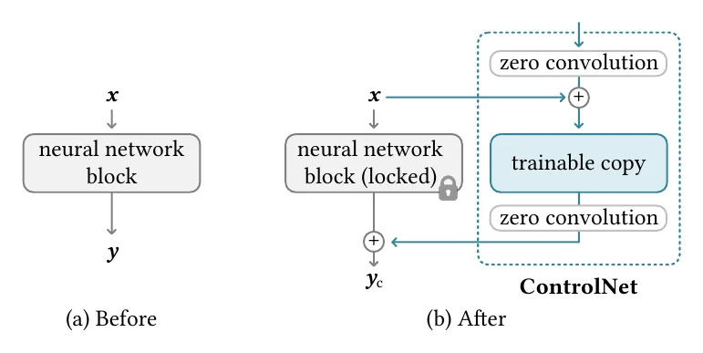
Its caption opens: “A neural block takes a feature map x as input and outputs another feature map y, as shown in (a).”
Before and after, side by side. The original block is grey and locked, and everything that was added is blue.
Borrow: Draw “before” in grey, and add your part in one colour.
LoRA · ICLR 2022 · paper
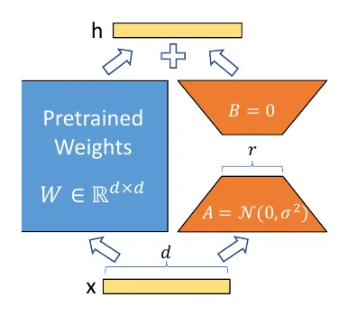
Its caption opens: “Our reparametrization.”
Blue is frozen and orange is trained. The orange shapes narrow to r, the low rank.
Borrow: Let a shape show the key quantity.
Dropout · JMLR 2014 · paper
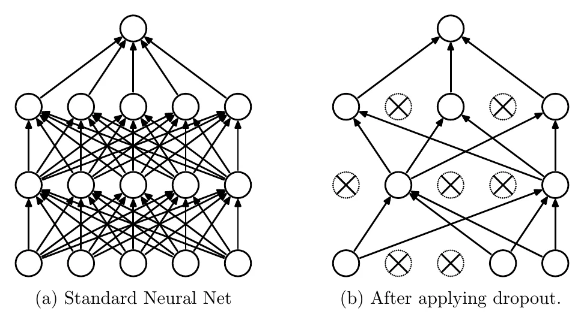
Its caption opens: “Dropout Neural Net Model.”
The same network twice: complete on the left, and with crossed-out units on the right. It needs no equation.
Borrow: Show the same thing before and after your change.
How does it differ from what came before?
Your novelty is a choice among known designs. Draw them side by side, yours last.
EfficientNet · ICML 2019 · paper
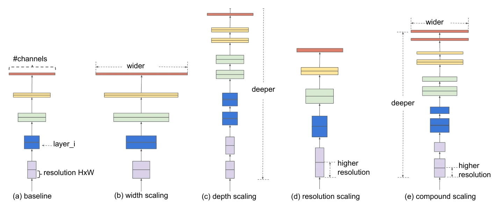
Its caption opens: “Model Scaling.”
A baseline, three ways to scale one dimension, and then ours, all drawn with the same shapes.
Borrow: Line up the alternatives, and put yours last.
Feature Pyramid Networks · CVPR 2017 · paper
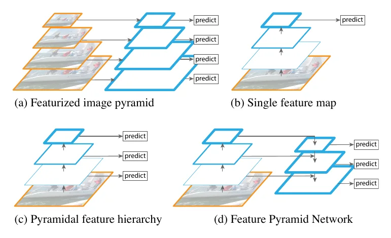
Its caption opens: “(a) Using an image pyramid to build a feature pyramid.”
Four pyramid designs in one drawing style. Thicker outlines mean stronger features, so the reader sees what each design lacks.
Borrow: Use one drawing style for every alternative, and one cue for quality.
ConvNeXt · CVPR 2022 · paper
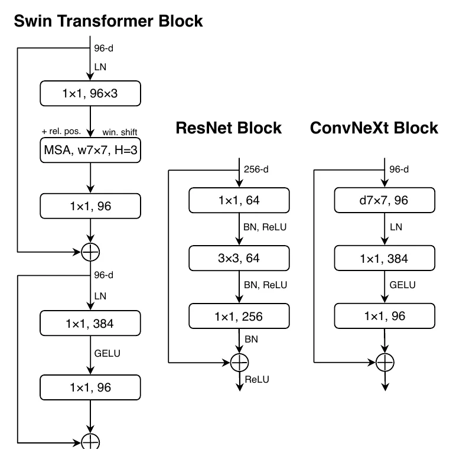
Its caption opens: “Block designs for a ResNet, a Swin Transformer, and a ConvNeXt.”
Three blocks side by side, with every layer and size written out. The reader can count the differences.
Borrow: For a change inside a block, put the blocks next to each other at one scale.
Time-LLM · ICLR 2024 · paper
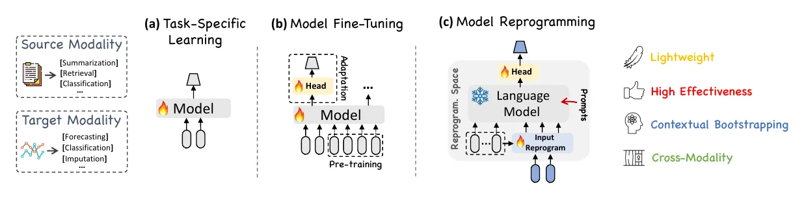
Its caption opens: “Schematic illustration of reprogramming large language models (LLMs) in comparison of (a) task-specific learning and (b) model fine-tuning.”
Three ways to adapt a model to time series, (a) to (c), with a flame on trained parts and a snowflake on frozen ones.
Borrow: Place your approach in a row with the existing ones. Watch out: Its icons and labels are small.
Tree of Thoughts · NeurIPS 2023 · paper
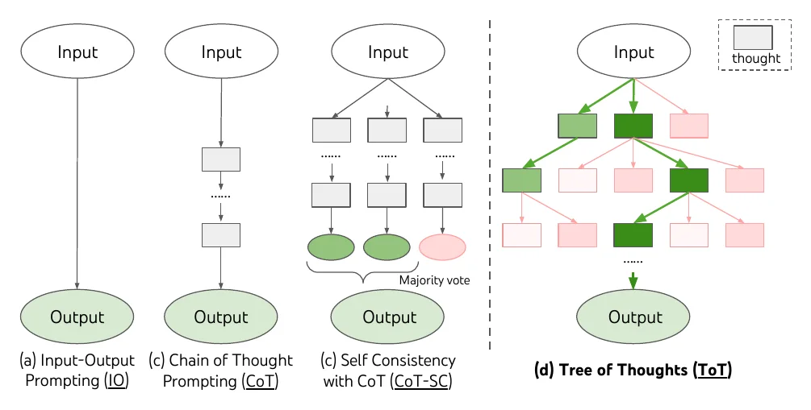
Its caption opens: “Schematic illustrating various approaches to problem solving with LLMs.”
Four ways to prompt a language model, drawn with the same boxes, from one straight line to a tree. Ours is the last panel, and green marks the path that is kept.
Borrow: Draw the earlier methods as simpler versions of yours.
How does it learn?
Your novelty is how the model is trained. Draw what the objective compares.
CycleGAN · ICCV 2017 · paper
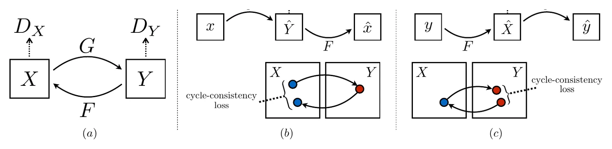
Its caption opens: “(a) Our model contains two mapping functions G: X → Y and F: Y → X, and associated adversarial discriminators …”
- shows the two mappings. (b) and (c) show one sample going round the loop and landing near where it started.
Borrow: To explain a loss, draw what it compares.
SimCLR · ICML 2020 · paper
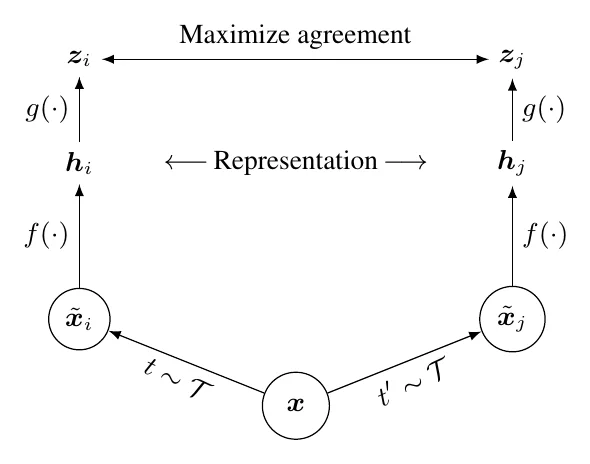
Its caption opens: “A simple framework for contrastive learning of visual representations.”
One image, two views, two branches, and one arrow labelled “Maximize agreement”. Every symbol is used in the text.
Borrow: Label the figure with the paper’s own symbols.
BERT · NAACL 2019 · paper
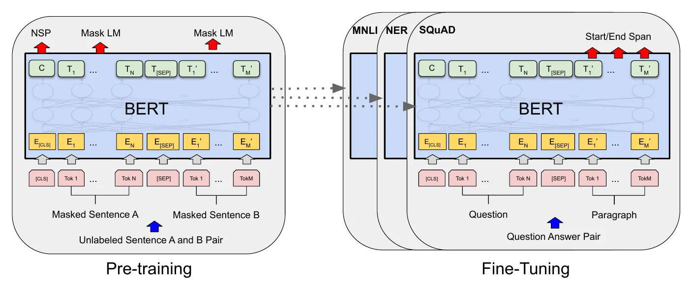
Its caption opens: “Overall pre-training and fine-tuning procedures for BERT.”
Pre-training and fine-tuning are drawn as the same model twice, so the reader sees that only the inputs and outputs change.
Borrow: Draw the two phases side by side, with the same shapes.
SatCLIP · AAAI 2025 · paper
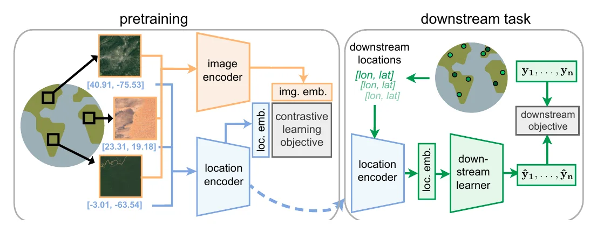
Its caption opens: “The SatCLIP pretraining and deployment pipeline.”
Pretraining is on the left and use is on the right, with real satellite tiles and coordinates. Each encoder keeps its colour across both halves.
Borrow: Show how it is trained and how it is used, in one figure.
Why should it work?
Your idea needs an intuition first. Draw a toy case in two dimensions.
LIME · KDD 2016 · paper
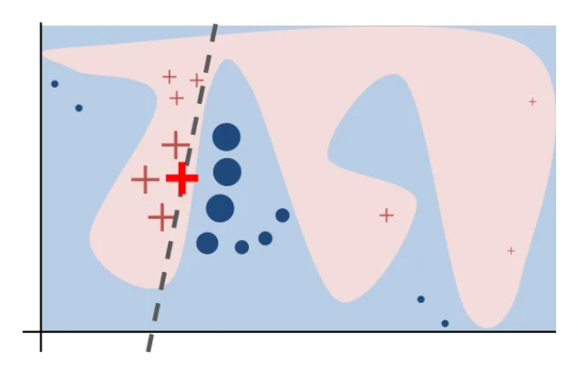
Its caption opens: “Toy example to present intuition for LIME.”
A toy in two dimensions: a wiggly decision boundary, one point to explain, and a straight dashed line that fits only nearby.
Borrow: Draw the idea in two dimensions before the real pipeline.
node2vec · KDD 2016 · paper
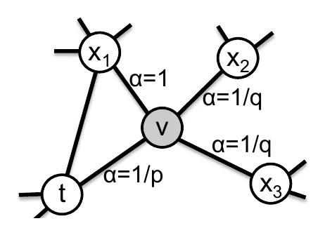
Its caption opens: “Illustration of the random walk procedure in node2vec.”
Five nodes are enough. The walk has just moved from t to v, and each possible next edge carries its bias.
Borrow: Use the smallest example that shows the rule.
MAML · ICML 2017 · paper
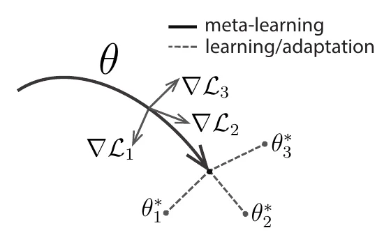
Its caption opens: “Diagram of our model-agnostic meta-learning algorithm (MAML), which optimizes for a representation θ that can quickly adapt to new tasks.”
One curve and three dashed lines: the parameters move to a point from which each task’s optimum is one short step away.
Borrow: A sketch of the geometry can explain an algorithm faster than its pseudocode.
Score-based SDEs · ICLR 2021 · paper
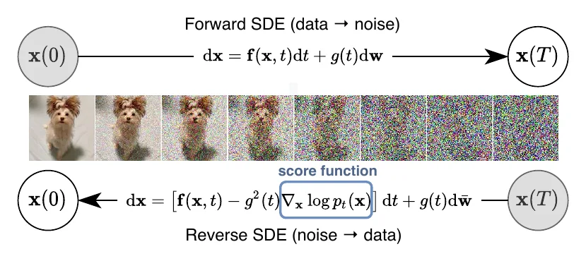
Its caption opens: “Solving a reverse-time SDE yields a score-based generative model.”
The equations and the picture are stacked. A photo dissolves into noise along the top arrow and comes back along the bottom one.
Borrow: Put the equation next to what it does.
What the 28 have in common
- It sits with the method. 26 of 28 are on pages 2 to 5, where the method is first described.
- It can double as the hero. In 14 of 28 it is Figure 1: those papers have no separate hero figure. If your idea is the method, one figure can do both jobs.
- It is a schematic. Only 9 of 28 show real data, against 20 of 24 hero figures. The ones that do, such as NeRF, YOLO and Segment Anything, are the easiest to follow.
- Colour and shape mean something. Frozen against trained, old against new, one colour per kind of block. The best ones give each colour one meaning.
- Its caption is often only a label. 11 of 28 open with a title such as “Model overview.” A sentence that says what the method does, as ControlNet’s and MAML’s do, helps the reader more.
- It leaves things out. “N×” stands for a stack, a zoom stands for the detail, and the standard parts are small or grey.
| Paper | Field | Answers | Figure | Page | Width | Shows |
|---|---|---|---|---|---|---|
| NeRF | vision | What happens to one input? | 2 | 5 | full | real data |
| YOLO | vision | What happens to one input? | 2 | 2 | column | real data |
| GraphSAGE | graphs | What happens to one input? | 1 | 2 | full | schematic |
| GenCast | weather | What happens to one input? | 1 | 2 | column | real data |
| RAG | language models | What happens to one input? | 1 | 2 | full | real data |
| Transformer | language | What is it made of? | 1 | 3 | column | schematic |
| U-Net | medical imaging | What is it made of? | 1 | 2 | full | schematic |
| Vision Transformer | vision | What is it made of? | 1 | 3 | full | real data |
| Segment Anything | vision | What is it made of? | 4 | 5 | full | real data |
| Diffusion Transformer | image generation | What is it made of? | 3 | 3 | full | schematic |
| Flamingo | vision and language | What is it made of? | 3 | 4 | full | real data |
| ResNet | vision | What is the new piece? | 2 | 2 | column | schematic |
| ControlNet | image generation | What is the new piece? | 2 | 3 | column | schematic |
| LoRA | language models | What is the new piece? | 1 | 1 | column | schematic |
| Dropout | classic ML | What is the new piece? | 1 | 2 | full | schematic |
| EfficientNet | vision | How does it differ from what came before? | 2 | 2 | full | schematic |
| Feature Pyramid Networks | vision | How does it differ from what came before? | 1 | 1 | column | schematic |
| ConvNeXt | vision | How does it differ from what came before? | 4 | 5 | column | schematic |
| Time-LLM | time series | How does it differ from what came before? | 1 | 3 | full | schematic |
| Tree of Thoughts | language models | How does it differ from what came before? | 1 | 2 | full | schematic |
| CycleGAN | image generation | How does it learn? | 3 | 3 | full | schematic |
| SimCLR | vision | How does it learn? | 2 | 2 | column | schematic |
| BERT | language | How does it learn? | 1 | 3 | full | schematic |
| SatCLIP | remote sensing | How does it learn? | 2 | 4 | full | real data |
| LIME | classic ML | Why should it work? | 3 | 4 | column | schematic |
| node2vec | graphs | Why should it work? | 2 | 4 | column | schematic |
| MAML | classic ML | Why should it work? | 1 | 2 | column | schematic |
| Score-based SDEs | generative models | Why should it work? | 1 | 2 | full | real data |
Make your own
- Choose the question, from the table above. One figure answers one question.
- Take the labels from your method section. Use the same names and the same symbols as the text.
- Follow one example, and show the data at each step, not only the name of the step.
- Keep one reading direction. A solid arrow means “data flows”. Use another line style for anything else, such as a loss or a gradient, and say so.
- Give colour one meaning: grey for what exists, one colour for what is new. If parts are frozen and parts are trained, mark them.
- Letter the stages (a), (b), (c), and reuse the letters in the caption and the section headings.
- Leave out what the reader knows. Write “N×” for repeats. Put the full detail in a second figure or the appendix.
- Stop at about seven boxes. If you need more, you need two figures.
- Build it at final width, as a vector PDF, with text of at least 6 to 7 pt.
- Test it. Give the figure and its caption to a labmate, without the method section, and ask them to explain the method back.
Checklist
The figures are reproduced from the cited papers for teaching and criticism only. Each belongs to its authors and publisher. If you are an author and would like a figure removed, please write to us.